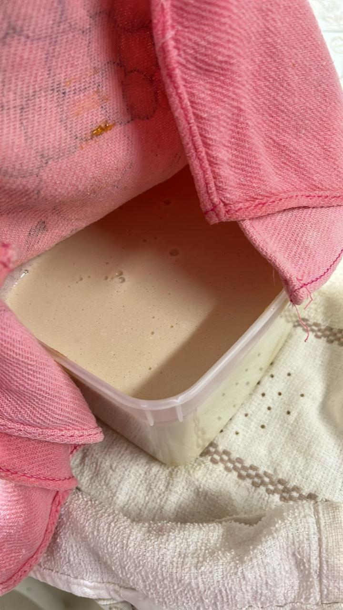
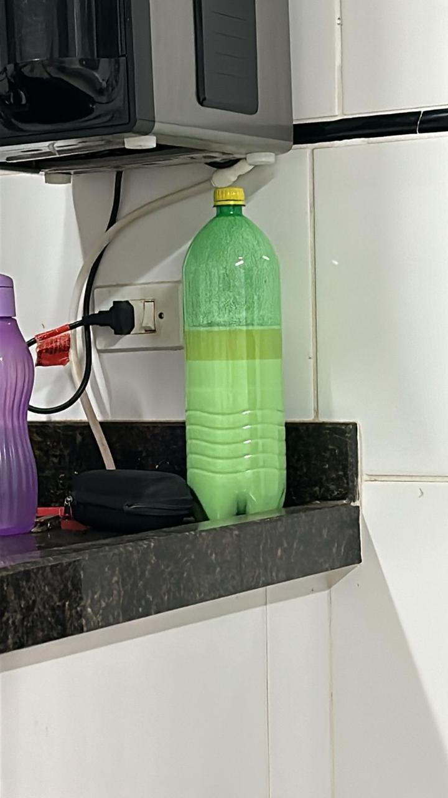
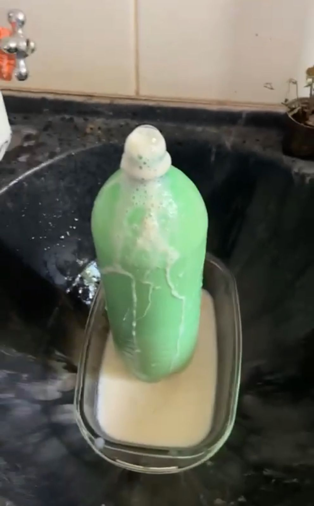
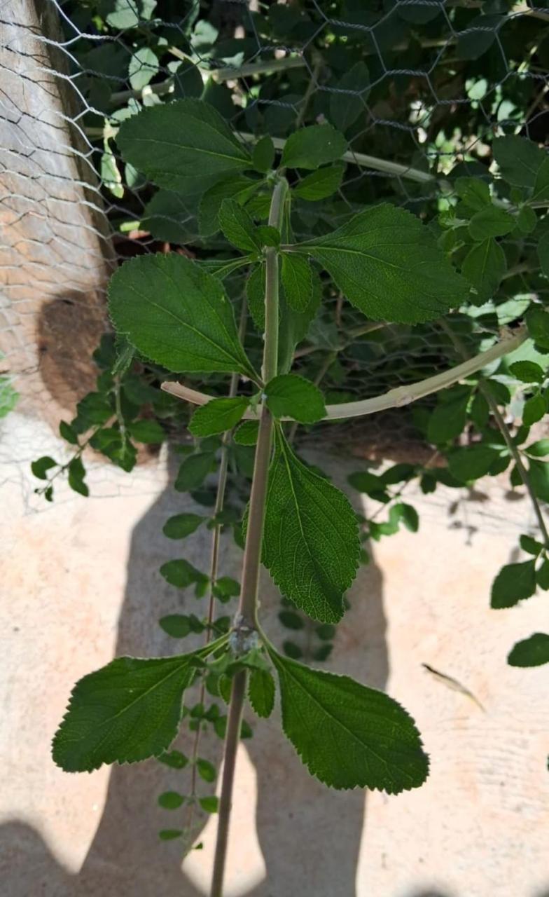

Modo de Preparo
Ingredientes
- 1 litro de leite;
- Melaço de cana 100ml;
- Farinha de arroz 50g;
- Água mineral 500ml;
- Erva cidreira fresca (Melissa officinalis) 100g;
- Garrafa pet de 2L;
Modo de Preparo

Primeira etapa concluída!

Após 24 horas, ficará neste estado.
Primeira Etapa: Preparo do Inoculante
- Ferva 500ml de água mineral e deixe esfriar até 30°C.
- Adicione o leite cru e misture bem.
- Peneire a erva cidreira e adicione ao leite, misturando novamente.
- Cubra a mistura e deixe descansar por 24h em temperatura ambiente.

Segunda etapa concluída!

Após 24 horas, ficará neste estado.

Após 24 horas, ficará neste estado.
Segunda Etapa: Ativação dos Microorganismos
- Adicione o melaço de cana e a farinha de arroz à mistura de leite e erva cidreira.
- Misture bem até dissolver completamente os ingredientes.
- Transfira a mistura para a garrafa pet.
- Feche a garrafa pet e deixe descansar por 15 dias em temperatura ambiente.
Segunda etapa concluída!
Após 24 horas, ficará neste estado.
Terceira Etapa: Monitoramento da Fermentação
- Obervar a formação de gases na garrafa pet durante os 15 dias (abrir todo dia com
cuidado pro gás sair).

Erva cidreira fresca (Melissa officinalis).
Quarta Etapa: Observação Microscópica
- Após 15 dias, retire uma pequena amostra da solução e observe ao microscópio com diferentes objetivas (40x,100x e 400x)..